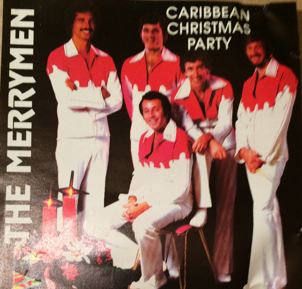

CD
Caribbean Christmas Party
The Merrymen
Media: Near Mint (NM or M-) · Sleeve: Near Mint (NM or M-)
CA$35.00
Discogs SuggestedCA$108.53
Discogs MedianCA$108.53
Discogs HighCA$108.53
- Physical Copy ID
- BB-CD-2051
- Year
- 1992
- Label
- Merry Disc
- Catalog #
- MM CD 1048
- Country
- CACanada
- Genre / Style
- Reggae · Calypso, Holiday